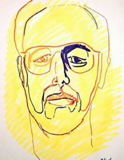

Gary Zaimont - artist
Home
Selected works
Biography
Statement
Studio

People
Seated Male
Two Woodcuts
Intimate portraits Susan Reclining / Valencia Head
Two Heads Richard Head, Yellow / Jenna, Red Face
Character Studies Valencia On Yellow / Susan Seated: Boots
Two Self Portraits Self Portrait – 1985 / Big Pink
Ro :: Two Vivid Portraits Ro in Black / Ro in Flowered Dress
Ro :: Two Portraits
Ro :: Variations in Sun Hat